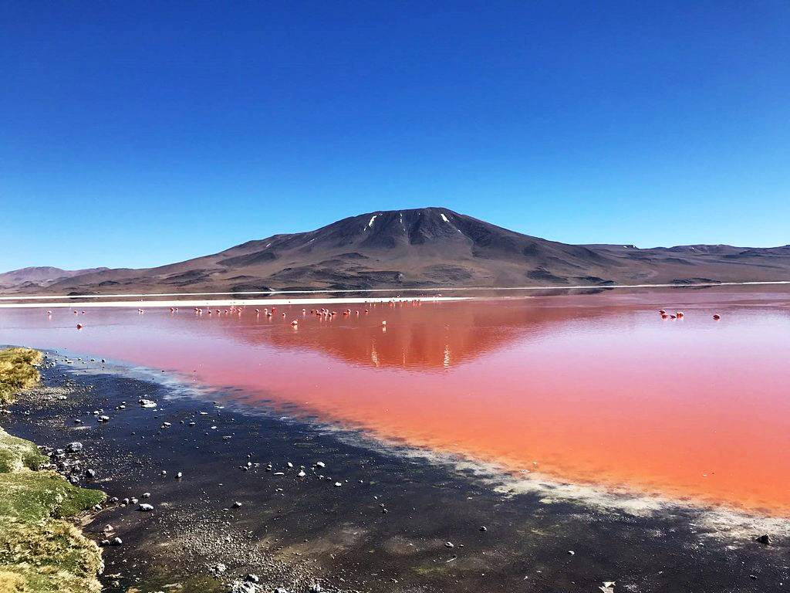
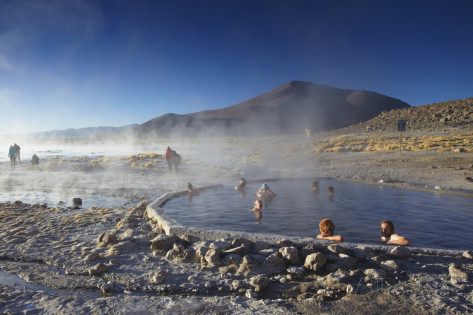
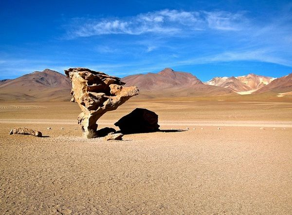
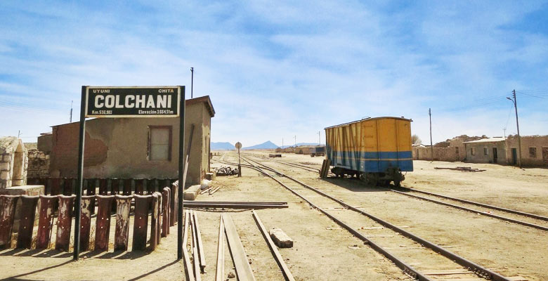
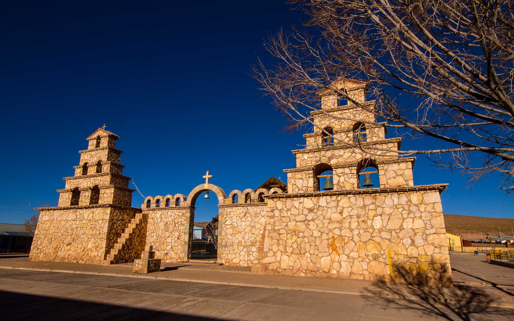
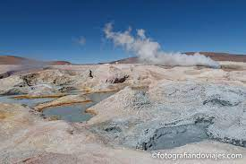
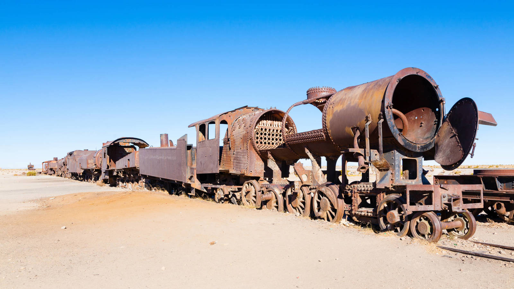

Lagunas Uyuni : en Bolivia es una pequeña ciudad situada en el medio de la nada. El turismo es su principal fuente de prosperidad gracias al Salar de Uyuni, el mayor del mundo.

Aguas termales de Uyuni:
Este suministro interminable de agua se escupe del suelo a una temperatura de 90ºC, a través de fumarolas y grietas a través de las cuales a veces incluso lava volcánica erupciona.

Salar de Uyuni:
El Salar de Uyuni en Bolivia se formó por la
desaparición de un océano interior que cubría la mayor parte del Altiplano y se extendía hasta el lago Titicaca. Es una experiencia extraordinaria cruzar este lago de sal en automóvil.

Desierto de Siloli: El Desierto de Siloli se encuentra en el departamento de Potosí, es considerado uno de los más áridos del mundo, debido a los bajos niveles de precipitaciones después del Desierto de Atacama.

Pueblo de Colchani
Uyuni : El Pueblo de Colchani constituye el punto de parada obligatorio camino al Majestuoso Salar de Uyuni, una de las peculiaridades del lugar es la construcción de pequeñas casas hechas con ladrillos de sal.

Pueblo de San Cristobal
Uyuni : El Pueblo de San Cristóbal se encuentra en la provincia de Colcha K en el departamento de Potosí

Reserva eduardo avaroa se encuentra situada al sur del departamento de Potosí en la provincia de Sud Lipez. Limita al sur con la republica de argentina y al oeste con Chile.

Polques aguas termalesLas aguas de Polques Termal son bien conocidas por su intensa actividad volcánica. Temprano en la mañana los turistas disfrutan de tomar un baño en estas aguas curativas.

Cementerio de trenes : La primera línea férrea en Bolivia fue Uyuni-Antofagasta e inicio trabajos el año 1899 y construida por ingenieros británicos

volcan licamburGuardián de la Laguna Verde el Licancahur Volvano es muy popular entre los turistas debido a su similitud con Marte